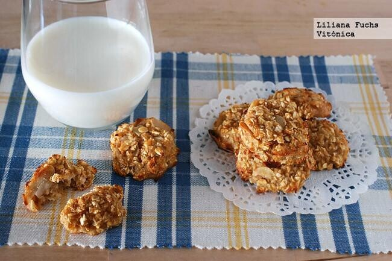

Recetas dulces saludables y sin azúcar para disfrutar de forma ligera
Los azúcares libres y añadidos son los principales enemigos de la alimentación actual. Sin embargo, nuestro paladar suele preferir platos dulces y ello conlleva un problema cuando buscamos comer más ligero. Afortunadamente, podemos acudir a alimentos azúcares naturales para endulzar sanamente o bien, a edulcorantes. Te mostramos 77 recetas dulces saludables y sin azúcar, para disfrutar de forma ligera.
ALFAJORES DE AVENA Y CHOCO!!🍪🍪

Se hacen en dos minutos , quiero ver sus fotos de los alfajores acompañados de mate, café, té etc.
🌸Ingredientes : para 3 unidades
1 huevo
1/2 taza de harina de avena
1/2 taza de almidón de maíz
1/2 taza de azúcar mascado. O edulcorante a gusto.
1 cdita de esencia de vainilla
2 cdas de aceite de girasol
Chocolate amargo a gusto
Dulce de leche para el relleno
🌸Preparacion:
Batir el huevo con el azúcar y la esencia de vainilla.
Incorporar la harina, la fécula, el aceite y los trozos o chip de chocolate.
Formar la masa y cortar las tapitas.
Poner en placa apta para horno y hornear por 10 minutos a fuego bajo.
Dejar enfriar y rellenar estas bombas!!!!
¿Que les parece?
Galletas de avena y manzana
 🌸Ingredientes
Para 25 unidades
Puré o compota de manzana 250 g
Copos de avena 80 g
Almendras crudas laminadas 20-50 gramos
Almendra molida 1 cucharadita
Cómo hacer galletas de avena y manzana
Dificultad: Fácil
Tiempo total
25 m
🌸Preparación
10 m
Cocción
15 m
Precalentar el horno a 180ºC y preparar una bandeja engrasándola o cubriéndola con papel sulfurizado. Si se
van a tostar las almendras, colocarlas en una sartén sin grasa y llevar al fuego, removiendo bien, hasta que
empiecen a dorarse. Dejar enfriar.
Colocar el puré de manzana en un cuenco y agregar los copos de avena, la sal y la canela. Mezclar bien hasta
tener una masa homogénea. Añadir las almendras y otros ingredientes al gusto, si se desea. La textura debe
ser muy húmeda, pero tenemos que ser capaces de formar pequeñas porciones sin que se desmoronen. Añadir más
avena si fuera necesario.
Con ayuda de un par de cucharillas, distribuir la masa en la bandeja formando galletas redondeadas. Si las
hacemos más gruesas quedarán más tiernas por dentro, y viceversa. Hornear durante unos 10-13 minutos, hasta
que estén firmes al tacto y ya se hayan dorado bien. Esperar unos minutos fuera del horno y desmoldar con
una espátula. Dejar enfriar sobre una rejilla.